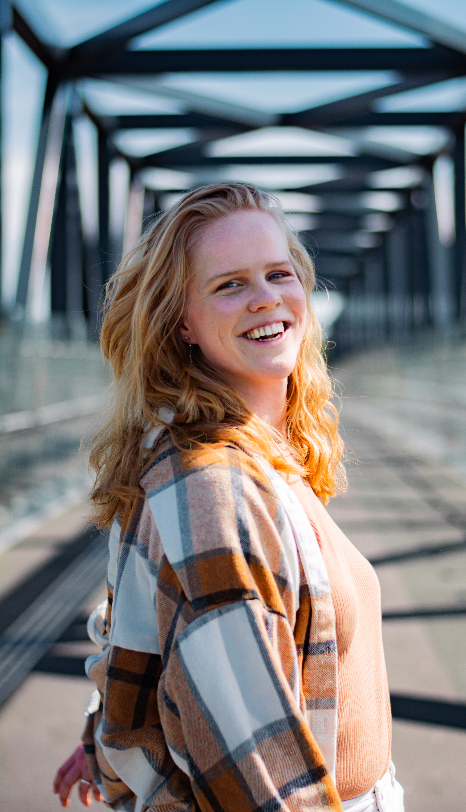

Portfolio HCI Marissa Hoekmeijer
Introductie
Hi ik ben Marissa Hoekmeijer, een tweede jaars student aan de Haagse Hogeschool. Ik studeer communicatie en multimedia design, waarin ik een vak volg genaamd HCI. Dit gaat in, op allerlij digitale computer interacties tussen mens en dus computers.
Verwachtingen
Mijn verwachtingen voor dit vak liggen hoog. Ik verwacht dat er veel creativiteit gecombineerd wordt met technische computer software, wat uiteindelijk leidt naar een prachtige en innovatief fysiek concept.
Wat hoop ik te leren?
Ik hoop meer te leren over verschillende software dat interacteert met mensen en hoe ik deze software zelf kan gaan inzetten om een creatief en innovatief product te ontwerpen dat interacteert met de gebruiker.